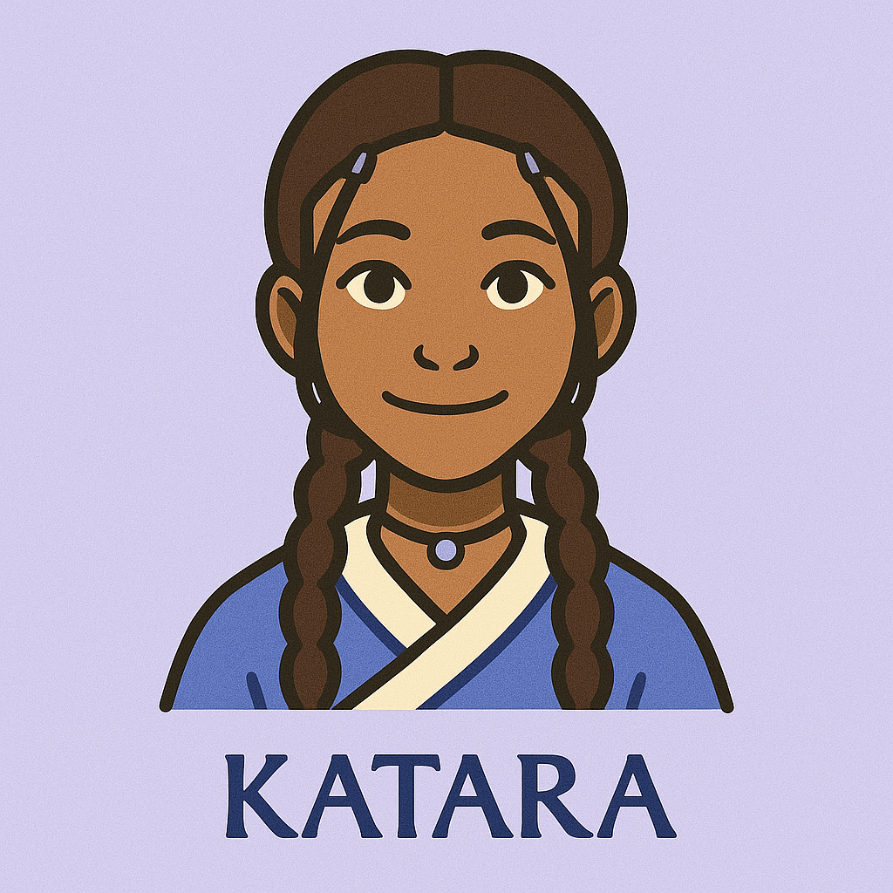

Sokka
Grace in motion, strength in spirit.
Katara is a master Waterbender from the Southern Water Tribe whose compassion, determination, and inner strength shape the heart of Team Avatar. Driven by a deep sense of justice and responsibility, she evolves from a self-taught bender into one of the most powerful waterbending masters of her time. Beyond her bending skills, Katara is the emotional anchor of the group, nurturing, fierce, and unafraid to speak her truth. Her journey is one of growth, healing, and unbreakable resolve.